CARACTERÍSTICAS
Acá vas a encontrar todo lo que quieras saber acerca de:

MATES
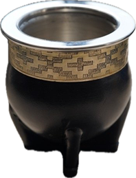
Mate de acero
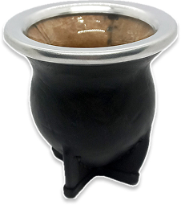
Mate de vidrio
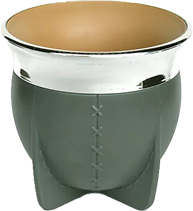
Mate de plástico

Mate de calabaza
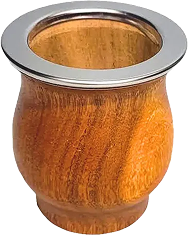
Mate de madera

BOMBILLAS
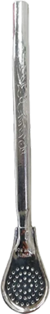
Bombilla
cuchara
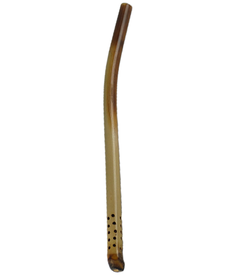
Bombilla de
caña
Bombilla recta
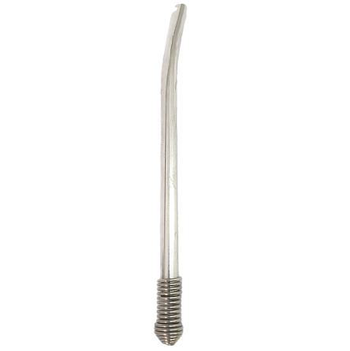
Bombilla
resorte
YERBAS
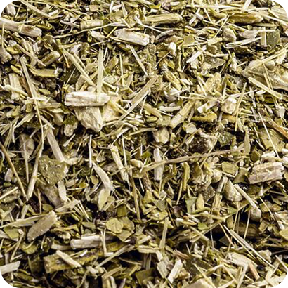
Yerba suave
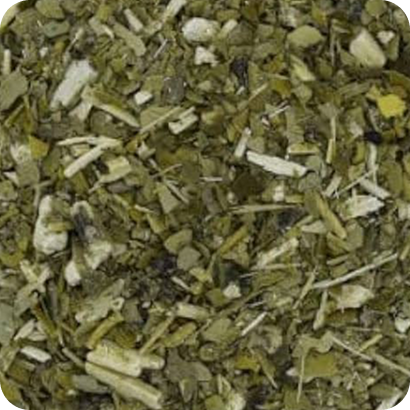
Yerba intensa
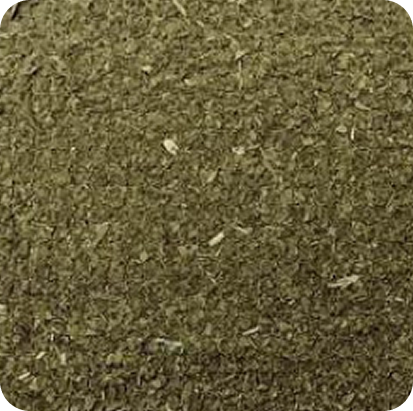
Yerba sin palo
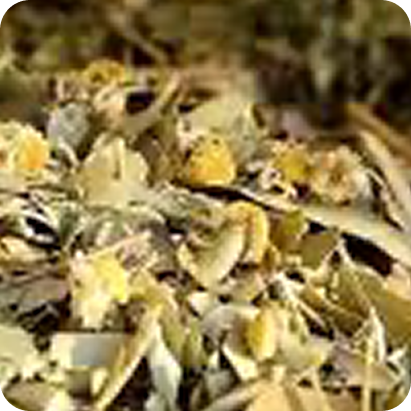
Yerba saborizada